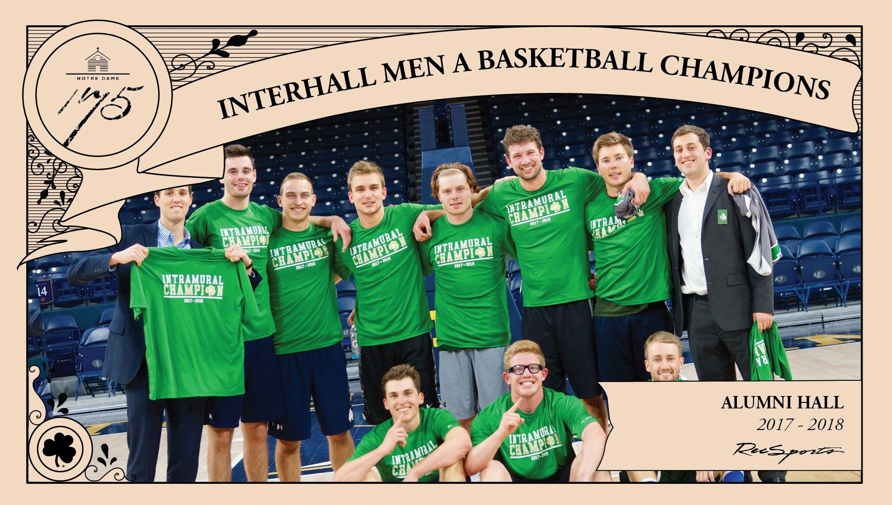
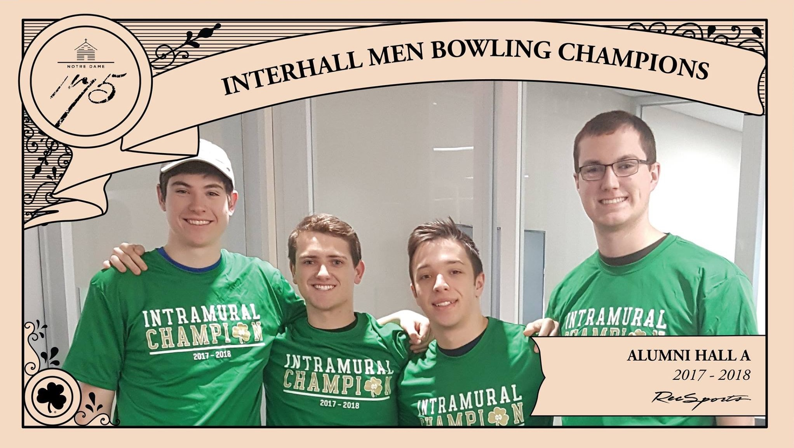

Athletics
The difference between Alumni winning and losing is trying.
Interhall Sports
Titles
We are the reigning champions in bowling and table tennis, and two-time defending Interhall A Basketball champions (looking for a three-peat in basketball). In the 2011-12 season, we brought home the O'Leary Cup, which is given to the men’s dorm that earns the most points playing interhall sports (think Harry Potter). In the 2017-18 season, we finished third in the O'Leary Cup standings. This year, we’re looking to bring the Cup back to the Dawg House.
 Recognition
Many dawgs participate in athletic events outside of intramural sports. Every week, a "Dawgthlete" is recognized for their athletic feats. At the end of every Mass, Alumni's athletic commissioner announces the Dawgthlete of the Week, nominated by his fellow Dawgs. Each Dawgthlete of the Week is immortalized on Alumni's Wall of Fame when their picture is taped up in the copy room. Dawgs are recognized for all kinds of athletic glory, whether it's throwing for 200 yards for the Dawg Football team, their efforts on the Fighting Irish varsity programs, finishing twelfth in the world for Irish step-dancing, or running in the Boston Marathon.
Fall Sports
- Tug of War
- Baseball
- Team Tennis
- Sand Volleyball
- Tackle Football
- Cross Country
- Golf
- Dodgeball
- Indoor Volleyball
- Domer Run
Spring Sports
- Basketball
- Bowling
- Ice Hockey
- Lacrosse
- Team Racquetball
- Soccer
- Team Table Tennis
With the exception of Tackle Football, you will need to supply your equipment for the sports that require it (gloves, rackets, cleats, skates, etc.), but the dorm covers all team and player fees.
Though some sports with smaller rosters such as basketball and football have cuts, all Dawgs are encouraged to play as many sports as they want, regardless of skill level or experience. Past winners of the O'Leary Cup weren't the most skilled athletes on campus, but they had the most passionate participants. As Fr. George says, "the difference between Alumni winning and losing is trying," and strong Dawg participation is what Alumni needs to get to the top.
Other Intramural Sports
RecSports also offers co-rec (AKA co-ed) intramural sports that are not interhall, such as Badminton, Broomball, Curling, Flag Football, Kickball, Softball, Ultimate Disc, and Wiffleball. These leagues do not contribute to our campaign to assert dominance over the rest of campus through athletic prowess, but they are an excellent way to obtain a highly coveted RecSports Interhall Champion shirt (see above). Co-rec intramurals are a great way to meet Lady Dawgs and make friends outside of Alumni. These programs require fees, and team sign-up slots fill up fast.
Notre Dame also has several club teams such as basketball, soccer, volleyball, and rugby if you’re looking for something that’s a little more competitive.
Another famous Notre Dame tradition is Bookstore Basketball. Bookstore Basketball is the largest outdoor five-on-five tournament in the world, with over 700 teams and ND, St. Mary's, and Holy Cross students of all skill levels participating each year.
Long story short, there are a ton of ways to get exercise and have fun doing it on Notre Dame's interhall, club, intramural, and CoRec sports teams. As far as getting involved, Alumni's RecSports commissioners and team captains will reach out through DawgMail and/or mass announcements to let people know when signups are coming up. All participants must officially signup through IMLeagues.com for each of the teams they play on.
And if sports aren't your thing, cheering on your fellow Dawgs is just as important! Nothing makes a Dawg want to jump higher, run faster, and hit harder than seeing Fr. George standing in front of a wild pack of Dawgs hooting and hollering with the DOG flag and Tucker the Trout waving through the air.
Additional Information
Any questions regarding interhall sports or RecSports in general should be directed towards your RecSports commissioners Chris Garbasz (cgarbasz@nd.edu) and Liam Champion (lchampio@nd.edu).
Good websites for reference are the RecSports Website and IMLeagues.